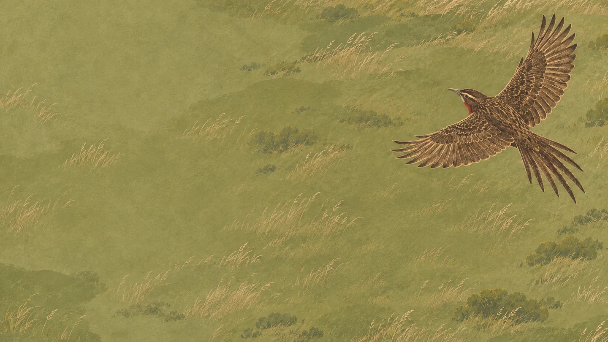
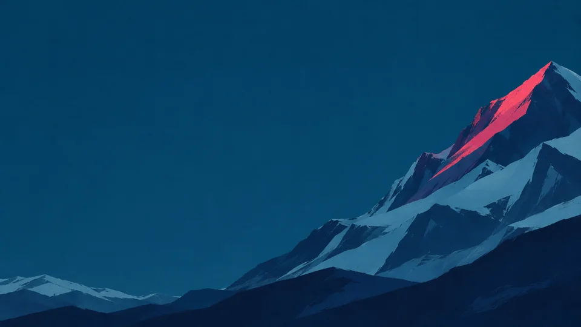
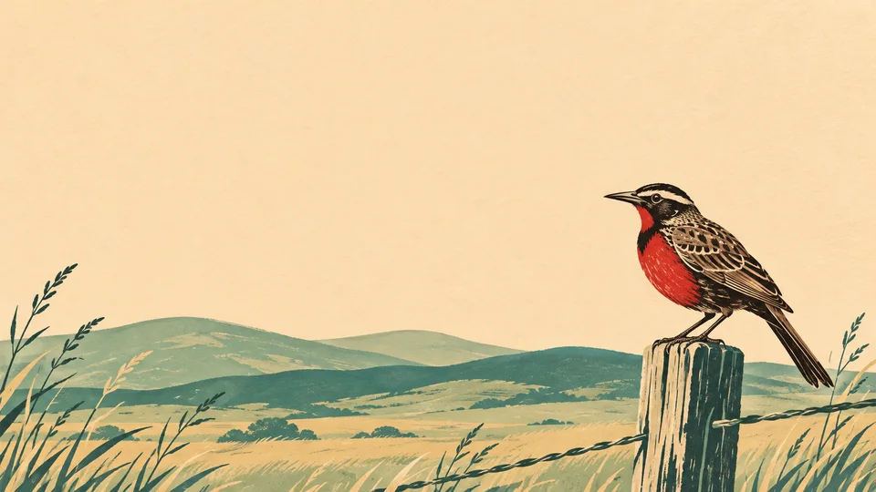
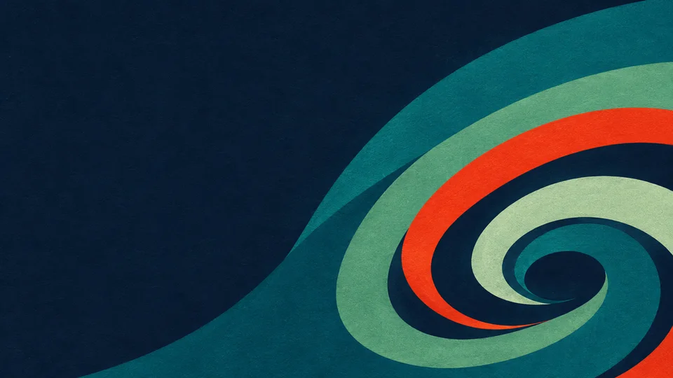

Loica
Sobre el secano
Una loica planea sobre una llanura del secano chileno. Vista desde arriba, la hierba se convierte en un campo de tinta oliva. Las plumas abiertas y un destello rojo en el pecho dan la medida del vuelo.
Galería de fondos de Tinet y Loica

Una loica planea sobre una llanura del secano chileno. Vista desde arriba, la hierba se convierte en un campo de tinta oliva. Las plumas abiertas y un destello rojo en el pecho dan la medida del vuelo.

La última luz de la tarde alcanza una arista de los Andes. Ese filo recoge el magenta de Tinet mientras las laderas se apagan en capas de azul petróleo.

Inspirada en las estampas de los cuadernos de campo, una loica mira desde un poste de cerco. Los cortes de tinta dibujan el plumaje y el pecho rojo destaca entre las lomas de salvia y los pastos secos.

Un giro de las corrientes del Pacífico sur, llevado a la abstracción. Las bandas de jade y celadón rodean un núcleo azul tinta, y una franja bermellón acompaña la curva.